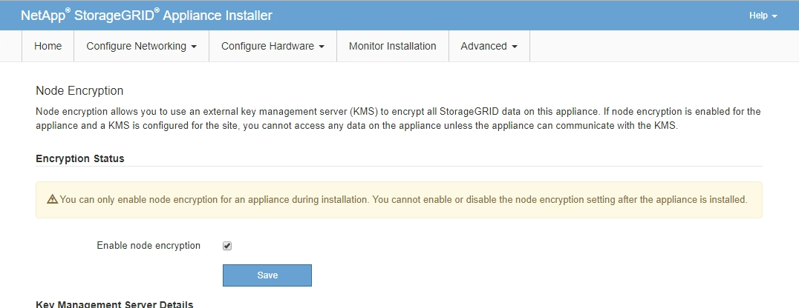

Los geht's
Los geht's
Optional: Aktivieren Sie die Node- oder Laufwerkverschlüsselung
 Änderungen vorschlagen
Änderungen vorschlagen
Sie können die Verschlüsselung auf Knoten- und Festplattenebene aktivieren, um die Festplatten in Ihrer Appliance vor physischen Verlust oder Entfernung vom Standort zu schützen.
-
Node-Verschlüsselung Verwendet Softwareverschlüsselung, um alle Festplatten in der Appliance zu schützen. Es wird keine spezielle Laufwerkshardware benötigt. Die Node-Verschlüsselung wird von der Appliance-Software mithilfe von Schlüsseln durchgeführt, die von einem externen KMS (Key Management Server) gemanagt werden.
-
Laufwerkverschlüsselung Verwendung von Hardware-Verschlüsselung zum Schutz von Self-Encrypting Drives (SEDs), die auch als Full-Disk Encryption-Laufwerke (FED) bezeichnet werden, einschließlich der Laufwerke, die die Standards der Federal Information Processing (FIPS) erfüllen. Die Laufwerkverschlüsselung erfolgt innerhalb jedes Laufwerks mithilfe von Schlüsseln, die von einem StorageGRID Schlüsselmanager gemanagt werden.
Sie können beide Verschlüsselungsstufen auf unterstützten Laufwerken durchführen, um zusätzliche Sicherheit zu gewährleisten.
Siehe "Verschlüsselungsmethoden von StorageGRID" Um Informationen zu allen für StorageGRID Appliances verfügbaren Verschlüsselungsmethoden zu erhalten.
Aktivieren Sie die Node-Verschlüsselung
Wenn Sie die Node-Verschlüsselung aktivieren, können die Festplatten Ihrer Appliance durch eine sichere KMS-Verschlüsselung (Key Management Server) gegen physischen Verlust oder die Entfernung vom Standort geschützt werden. Während der Appliance-Installation müssen Sie die Node-Verschlüsselung auswählen und aktivieren. Die Knotenverschlüsselung kann nach dem Start der KMS-Verschlüsselung nicht deaktiviert werden.
Wenn Sie ConfigBuilder zum Generieren einer JSON-Datei verwenden, können Sie die Node-Verschlüsselung automatisch aktivieren. Siehe "Automatisierung der Appliance-Installation und -Konfiguration".
Überprüfen Sie die Informationen über "Konfigurieren von KMS".
Eine Appliance mit aktivierter Node-Verschlüsselung stellt eine Verbindung zum externen Verschlüsselungsmanagement-Server (KMS) her, der für den StorageGRID-Standort konfiguriert ist. Jeder KMS (oder KMS-Cluster) verwaltet die Schlüssel für alle Appliance-Nodes am Standort. Diese Schlüssel verschlüsseln und entschlüsseln die Daten auf jedem Laufwerk in einer Appliance mit aktivierter Node-Verschlüsselung.
Ein KMS kann im Grid Manager vor oder nach der Installation der Appliance in StorageGRID eingerichtet werden. Weitere Informationen zur KMS- und Appliance-Konfiguration finden Sie in den Anweisungen zur Administration von StorageGRID.
-
Wenn ein KMS vor der Installation der Appliance eingerichtet wird, beginnt die KMS-kontrollierte Verschlüsselung, wenn Sie die Node-Verschlüsselung auf der Appliance aktivieren und diese zu einem StorageGRID Standort hinzufügen, an dem der KMS konfiguriert wird.
-
Wenn vor der Installation der Appliance kein KMS eingerichtet wird, wird für jede Appliance, deren Node-Verschlüsselung aktiviert ist, KMS-gesteuerte Verschlüsselung durchgeführt, sobald ein KMS konfiguriert ist und für den Standort, der den Appliance-Node enthält, verfügbar ist.

|
Wenn eine Appliance mit aktivierter Node-Verschlüsselung installiert wird, wird ein temporärer Schlüssel zugewiesen. Die Daten auf der Appliance werden erst dann geschützt, wenn die Appliance mit dem Key Management System (KMS) verbunden und ein KMS-Sicherheitsschlüssel festgelegt ist. Siehe "Übersicht über die KMS-Appliance-Konfiguration" Finden Sie weitere Informationen. |
Ohne den KMS-Schlüssel, der zur Entschlüsselung der Festplatte benötigt wird, können die Daten auf der Appliance nicht abgerufen werden und gehen effektiv verloren. Dies ist der Fall, wenn der Entschlüsselungsschlüssel nicht vom KMS abgerufen werden kann. Der Schlüssel ist nicht mehr zugänglich, wenn ein Kunde die KMS-Konfiguration löscht, ein KMS-Schlüssel abläuft, die Verbindung zum KMS verloren geht oder die Appliance aus dem StorageGRID System entfernt wird, wo die KMS-Schlüssel installiert sind.
-
Öffnen Sie einen Browser, und geben Sie eine der IP-Adressen für den Computing-Controller der Appliance ein.
https://Controller_IP:8443Controller_IPDie IP-Adresse des Compute-Controllers (nicht des Storage-Controllers) in einem der drei StorageGRID-Netzwerke.Die Startseite des StorageGRID-Appliance-Installationsprogramms wird angezeigt.
Nachdem die Appliance mit einem KMS-Schlüssel verschlüsselt wurde, können die Gerätelaufwerke nicht entschlüsselt werden, ohne denselben KMS-Schlüssel zu verwenden. -
Wählen Sie Hardware Konfigurieren > Node Encryption.

-
Wählen Sie Node-Verschlüsselung aktivieren.
Vor der Installation der Appliance können Sie die Option Enable Node Encryption deaktivieren, ohne dass es zu Datenverlust kommt. Sobald die Installation beginnt, greift der Appliance-Node auf die KMS-Verschlüsselungsschlüssel im StorageGRID System zu und beginnt mit der Festplattenverschlüsselung. Sie können die Node-Verschlüsselung nicht deaktivieren, nachdem die Appliance installiert wurde.
Nachdem Sie eine Appliance mit aktivierter Knotenverschlüsselung zu einem StorageGRID-Standort mit KMS hinzugefügt haben, können Sie die KMS-Verschlüsselung für den Knoten nicht mehr verwenden. -
Wählen Sie Speichern.
-
Implementieren Sie die Appliance als Node in Ihrem StorageGRID System.
DIE KMS-gesteuerte Verschlüsselung beginnt, wenn die Appliance auf die für Ihre StorageGRID Site konfigurierten KMS-Schlüssel zugreift. Das Installationsprogramm zeigt während des KMS-Verschlüsselungsprozesses Fortschrittsmeldungen an. Dies kann je nach Anzahl der Festplatten-Volumes in der Appliance einige Minuten dauern.

Die Appliances werden anfänglich mit einem zufälligen Verschlüsselungsschlüssel ohne KMS konfiguriert, der jedem Festplatten-Volume zugewiesen wird. Die Laufwerke werden mit diesem temporären Verschlüsselungsschlüssel verschlüsselt, der nicht sicher ist, bis die Appliance mit aktivierter Node-Verschlüsselung auf die KMS-Schlüssel zugreift, die für Ihre StorageGRID-Site konfiguriert wurden.
Wenn sich der Appliance-Node im Wartungsmodus befindet, können Sie den Verschlüsselungsstatus, die KMS-Details und die verwendeten Zertifikate anzeigen. Siehe "Überwachung der Node-Verschlüsselung im Wartungsmodus" Zur Information.
Laufwerkverschlüsselung
Die Laufwerkverschlüsselung wird während des Schreib- und Lesevorgangs auf der SED-Hardware (Self-Encrypting Drive) verwaltet. Der Zugriff auf Daten auf diesen Laufwerken wird über eine benutzerdefinierte Passphrase gesteuert. Laufwerksverschlüsselung wird für Direct-Attached Solid State Drives (SSDs) verwendet, die für die Cache-Speicherung in StorageGRID Appliances verwendet werden.
Verschlüsselte SEDs werden automatisch gesperrt, wenn das Gerät ausgeschaltet wird oder wenn das Laufwerk aus dem Gerät entfernt wird. Eine verschlüsselte SED bleibt gesperrt, nachdem die Stromversorgung wiederhergestellt wurde, bis die korrekte Passphrase eingegeben wurde. Damit auf Laufwerke zugegriffen werden kann, ohne die Passphrase manuell erneut einzugeben, wird die Passphrase auf der StorageGRID-Appliance gespeichert, um verschlüsselte Laufwerke zu entsperren, die beim Neustart der Appliance in der Appliance verbleiben. Laufwerke, die mit einer SED-Passphrase verschlüsselt sind, können von jedem, der die Passphrase kennt, aufgerufen werden.
Die Festplattenverschlüsselung ist nicht bei von SANtricity gemanagten Laufwerken möglich. Wenn Sie eine StorageGRID-Appliance mit SEDs und SANtricity-Controllern haben, können Sie die Laufwerksicherheit in aktivieren "SANtricity System Manager".
Sie können die Laufwerkverschlüsselung während der ersten Appliance-Installation aktivieren, bevor Sie den Grid Manager laden. Sie können auch die Node-Verschlüsselung aktivieren oder Ihre Passphrase ändern, indem Sie die Appliance in den Wartungsmodus versetzen.
Überprüfen Sie die Informationen über "Verschlüsselungsmethoden von StorageGRID".
Eine Passphrase wird festgelegt, wenn die Laufwerkverschlüsselung zunächst aktiviert ist. Wenn ein Compute-Node ersetzt wird oder wenn eine verschlüsselte SED auf einen neuen Compute-Node verschoben wird, müssen Sie die Passphrase manuell erneut eingeben.
|
|
Stellen Sie sicher, dass Sie die Passphrase für die Laufwerkverschlüsselung an einem sicheren Ort speichern. Auf verschlüsselte SEDs kann nicht zugegriffen werden, ohne die gleiche Passphrase manuell einzugeben, wenn die SED in einer anderen StorageGRID-Appliance installiert ist. |
Laufwerkverschlüsselung aktivieren
-
Greifen Sie auf das Installationsprogramm der StorageGRID Appliance zu.
-
Öffnen Sie während der ersten Appliance-Installation einen Browser, und geben Sie eine der IP-Adressen für den Rechner-Controller der Appliance ein.
https://Controller_IP:8443
Controller_IPDie IP-Adresse des Compute-Controllers (nicht des Storage-Controllers) in einem der drei StorageGRID-Netzwerke.-
Für eine vorhandene StorageGRID Appliance "Schalten Sie das Gerät in den Wartungsmodus".
-
-
Wählen Sie auf der Startseite des StorageGRID-Geräteinstallationsprogramms die Option Hardware konfigurieren > Laufwerkverschlüsselung aus.
-
Wählen Sie Laufwerkverschlüsselung aktivieren.
Nach Aktivierung der Laufwerkverschlüsselung und Einstellung der Passphrase sind die SED-Laufwerke hardwareverschlüsselt. Auf den Inhalt des Laufwerks kann nicht ohne die gleiche Passphrase zugegriffen werden. -
Wählen Sie Speichern.
Nachdem das Laufwerk verschlüsselt wurde, werden Informationen zur Passphrase des Laufwerks angezeigt.
Wenn ein Laufwerk zunächst verschlüsselt wird, wird die Passphrase auf einen leeren Standardwert gesetzt, und der aktuelle Kennworttext zeigt „Standard (nicht sicher)“ an. Während die Daten auf diesem Laufwerk verschlüsselt sind, können Sie darauf zugreifen, ohne eine Passphrase einzugeben, bis eine eindeutige Passphrase festgelegt ist. -
Geben Sie eine eindeutige Passphrase für den Zugriff auf ein verschlüsseltes Laufwerk ein, und bestätigen Sie die Passphrase erneut. Die Passphrase muss mindestens 8 und nicht mehr als 32 Zeichen lang sein.
-
Geben Sie den Anzeigetext für die Passphrase ein, mit dem Sie die Passphrase abrufen können.
Speichern Sie den Anzeigetext für Passphrase und Passphrase an einem sicheren Ort, z. B. in einer Anwendung zur Passwortverwaltung.
-
Wählen Sie Speichern.
Anzeigen des Status der Laufwerkverschlüsselung
-
Wählen Sie im Installationsprogramm des StorageGRID-Geräts die Option Hardware konfigurieren > Laufwerkverschlüsselung aus.
Zugriff auf ein verschlüsseltes Laufwerk
Sie müssen die Passphrase eingeben, um auf ein verschlüsseltes Laufwerk zuzugreifen, nachdem ein Compute-Node ausgetauscht wurde oder ein Laufwerk auf einen neuen Compute-Node verschoben wurde.
-
Greifen Sie auf das Installationsprogramm der StorageGRID Appliance zu.
-
Öffnen Sie einen Browser, und geben Sie eine der IP-Adressen für den Rechner-Controller der Appliance ein.
https://Controller_IP:8443
Controller_IPDie IP-Adresse des Compute-Controllers (nicht des Storage-Controllers) in einem der drei StorageGRID-Netzwerke. -
-
Wählen Sie im Installationsprogramm des StorageGRID-Geräts den Link Laufwerkverschlüsselung im Warnbanner aus.
-
Geben Sie die zuvor festgelegte Passphrase für die Laufwerkverschlüsselung unter Neue Passphrase und Neue Passphrase erneut eingeben ein.
Wenn Sie Werte für die Passphrase und Passphrase eingeben, die nicht mit den zuvor eingegebenen Werten übereinstimmen, schlägt die Laufwerkauthentifizierung fehl. Sie müssen das Gerät neu starten und den korrekten Text für die Passphrase und Passphrase eingeben. -
Geben Sie den zuvor eingestellten Text für die Passphrase in Neuer Text für die Kennwortanzeige ein.
-
Wählen Sie Speichern.
Die Warnbanner werden nicht mehr angezeigt, wenn die Laufwerke entsperrt sind.
-
Kehren Sie zur Startseite des StorageGRID-Geräteinstallationsprogramms zurück, und wählen Sie im Banner des Abschnitts Installation die Option Neustart aus, um den Rechenknoten neu zu starten und auf die verschlüsselten Laufwerke zuzugreifen.
Ändern Sie die Passphrase für die Laufwerkverschlüsselung
-
Greifen Sie auf das Installationsprogramm der StorageGRID Appliance zu.
-
Öffnen Sie einen Browser, und geben Sie eine der IP-Adressen für den Rechner-Controller der Appliance ein.
https://Controller_IP:8443
Controller_IPDie IP-Adresse des Compute-Controllers (nicht des Storage-Controllers) in einem der drei StorageGRID-Netzwerke. -
-
Wählen Sie im Installationsprogramm des StorageGRID-Geräts die Option Hardware konfigurieren > Laufwerkverschlüsselung aus.
-
Geben Sie eine neue eindeutige Passphrase für den Laufwerkszugriff ein, und bestätigen Sie die Passphrase erneut. Die Passphrase muss mindestens 8 und nicht mehr als 32 Zeichen lang sein.
Sie müssen sich bereits mit Zugriff auf das Laufwerk authentifiziert haben, bevor Sie die Passphrase für die Laufwerkverschlüsselung ändern können. -
Geben Sie den Anzeigetext für die Passphrase ein, mit dem Sie die Passphrase abrufen können.
-
Wählen Sie Speichern.
Nachdem Sie eine neue Passphrase festgelegt haben, können die verschlüsselten Laufwerke nicht entschlüsselt werden, ohne die neue Passphrase und den Anzeigetext für die Passphrase zu verwenden. -
Speichern Sie die neue Passphrase und Passphrase Anzeigetext an einem sicheren Ort, z. B. in einer Anwendung zur Passwortverwaltung.
Deaktivieren Sie die Laufwerkverschlüsselung
-
Greifen Sie auf das Installationsprogramm der StorageGRID Appliance zu.
-
Öffnen Sie einen Browser, und geben Sie eine der IP-Adressen für den Rechner-Controller der Appliance ein.
https://Controller_IP:8443
Controller_IPDie IP-Adresse des Compute-Controllers (nicht des Storage-Controllers) in einem der drei StorageGRID-Netzwerke. -
-
Wählen Sie im Installationsprogramm des StorageGRID-Geräts die Option Hardware konfigurieren > Laufwerkverschlüsselung aus.
-
Löschen Sie Enable Drive Encryption.
-
Um alle Laufwerksdaten zu löschen, wenn die Laufwerkverschlüsselung deaktiviert ist, wählen Sie Alle Daten auf Laufwerken löschen.
Die Option zum Löschen von Daten kann nur vom Installationsprogramm der StorageGRID-Appliance bereitgestellt werden, bevor die Appliance dem Grid hinzugefügt wird. Sie können nicht auf diese Option zugreifen, wenn Sie im Wartungsmodus auf das Installationsprogramm der StorageGRID-Appliance zugreifen. -
Wählen Sie Speichern.
Der Laufwerksinhalt wird unverschlüsselt oder kryptografisch gelöscht, die Passphrase für die Verschlüsselung wird gelöscht und die SEDs sind nun ohne Passphrase zugänglich.